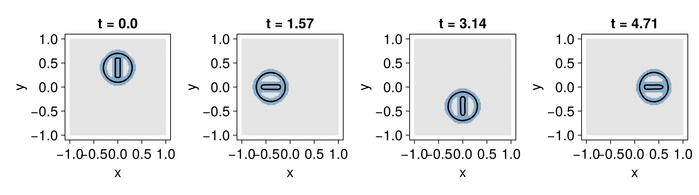

Narrow-band fields
The interface tracked by a level-set method is a lower-dimensional object — a curve in 2D, a surface in 3D — yet a dense MeshField stores and updates $\phi$ at every node of the grid. Away from the interface those values are irrelevant to the interface motion. A NarrowBandMeshField exploits this by keeping values only on a thin band of nodes around the interface, so the cost of a simulation scales with the size of the interface rather than the size of the grid. The saving grows with resolution and with dimension; it is most dramatic in 3D, where the grid has $O(N^3)$ nodes but the band only $O(N^2)$.
A narrow-band field implements the same interface as a dense one (see Grids and mesh fields), so it is a drop-in replacement: equations, terms, boundary conditions, integrators, and geometric queries all work unchanged.
Constructing a band
The usual way to build a band is to restrict an existing MeshField to a tube around its zero contour. The nlayers keyword sets the halo depth — how many node layers are kept around the cells the interface cuts through:
using LevelSetMethods
grid = CartesianGrid((-1, -1), (1, 1), (100, 100))
ϕ = MeshField(x -> hypot(x...) - 0.5, grid)
nb = NarrowBandMeshField(ϕ; nlayers = 3)NarrowBandMeshField on CartesianGrid in ℝ²
├─ domain: [-1.0, 1.0] × [-1.0, 1.0]
├─ nodes: 100 × 100
├─ spacing: h = (0.0202, 0.0202)
├─ active: 1244 nodes (3-layer halo)
├─ valtype: Float64
└─ values: min = -0.07987, max = 0.08289The display reports the number of active nodes — those actually stored — out of the whole grid. Only a small fraction lies in the band:
length(nodeindices(nb)), length(active_nodeindices(nb))(10000, 1244)Band membership is purely topological (it is built from the cells whose corner values straddle zero), so ϕ need not be a signed distance function. It helps if it is, though: a distorted ϕ with $|\nabla\phi| \gg 1$ packs its level sets together and makes the band thinner in physical space than nlayers suggests. Keeping ϕ close to a signed distance function (see Reinitialization) keeps the band well-behaved.
Solving on a band
Because a NarrowBandMeshField shares the dense-field interface, evolving one is exactly the same code as before — just pass it as the initial condition. Here we rotate a notched disk, plotting a few snapshots; the recipe shades the active band cells, so you can watch the band travel with the interface:
using GLMakie
LevelSetMethods.set_makie_theme!()
disk = MeshField(x -> hypot((x .- (0.0, 0.4))...) - 0.3, grid)
slot = MeshField(x -> maximum(abs.(x .- (0.0, 0.4)) .- (0.1, 0.4) ./ 2), grid)
ϕ₀ = setdiff(disk, slot) # a notched disk; see the geometry page
nb₀ = NarrowBandMeshField(ϕ₀; nlayers = 3)
eq = LevelSetEquation(; terms = AdvectionTerm((x, t) -> (-x[2], x[1])), ic = nb₀, bc = NeumannBC())
fig = Figure(; size = (1000, 280))
for (n, t) in enumerate((0.0, π / 2, π, 3π / 2))
integrate!(eq, t)
ax = Axis(fig[1, n]; title = "t = $(round(t; digits = 2))")
plot!(ax, eq)
end
fig
Automatic band maintenance
As the interface moves, the band must move with it: nodes the interface is about to reach must be activated, and nodes it has left behind can be dropped. integrate! does this automatically — after every accepted step it calls update_band! to rebuild the tube around the new interface position. You do not need to manage the band yourself.
The nlayers halo must be deep enough for the finite-difference and WENO stencils, which reach a few nodes beyond the interface. The default of 3 is a sound choice for the WENO5 scheme; when a stencil reaches just past the band edge, the missing value is supplied by extrapolation from the nearest band nodes, so accuracy degrades gracefully rather than failing. A wider band trades memory for a little more accuracy near its edge.
Reinitialization on a band
Reinitialization works on a band just as on a dense field, acting only on the active nodes. Because the band is rebuilt from the interface each step, keeping $\phi$ close to a signed distance function keeps the band's physical width predictable; a posthook reinitializing every step (or every few steps) is the usual pattern:
integrate!(eq, 2π; posthook = e -> reinitialize!(current_state(e)))
LevelSetMethods.volume(current_state(eq)) # geometric queries work on the band too0.2510779746809445When it pays off
The band stores roughly the nodes within nlayers of the interface, so the active fraction falls as the grid is refined — the band is a fixed number of layers around a lower-dimensional set. In 3D the effect is striking, since the grid grows cubically while the band grows quadratically:
for n in (32, 48)
g = CartesianGrid((-1, -1, -1), (1, 1, 1), (n, n, n))
sphere = NarrowBandMeshField(MeshField(x -> hypot(x...) - 0.5, g); nlayers = 3)
frac = length(active_nodeindices(sphere)) / length(nodeindices(sphere))
println("n = $n: $(length(active_nodeindices(sphere))) / $(length(nodeindices(sphere))) active ($(round(100frac; digits = 1))%)")
endn = 32: 6296 / 32768 active (19.2%)
n = 48: 14192 / 110592 active (12.8%)Limitations
A few features are not available on a narrow band:
- Periodic boundary conditions are not supported — the band and its halo do not wrap at the grid edge. Use a
MeshFieldfor periodic problems. - The
SemiImplicitI2OEintegrator requires a full-gridMeshField; the explicit integrators (ForwardEuler,RK2,RK3) all work on a band.